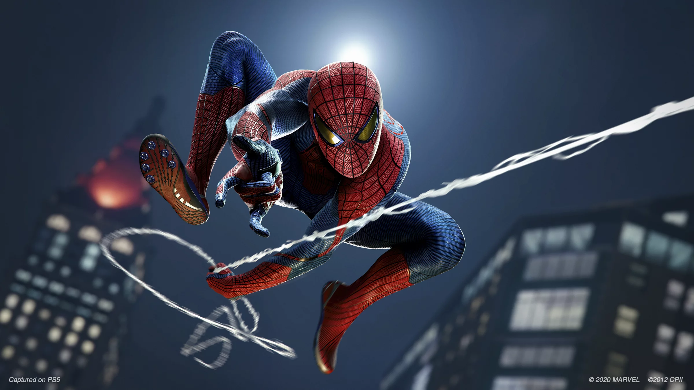
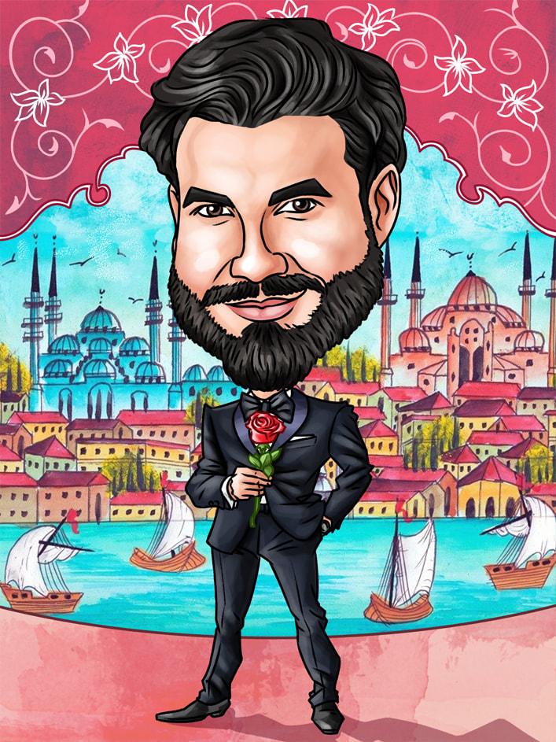

Dimitri's favorite color is purple. Because it fits him very well. And the second one it's obviously pink, easy guess
Dimi always loved cats. The cat is his spiritual animal, but not just any cat - one with an old granny face.
I don't know if he like cats because of this granny, but you can guess. Of course, you don't need to tell him
Dimi is a sportsman, he likes al kinds of sports.
I don't know if beers lifting comes second, but he told me that his favorite sport is to forgotHere is a hard one. I think Dimi's favoriete fictional character is spider. He was dreaming since he was a child to be able to jump on the buildings all over the city and he loves to swing on a spider web.
When he's going to a date he is a charming youg man, always with his hair and beard done just like in the magazines.
In three words Dimi is:
Now this the challenge box. I am conviced that i can't challenge Dimi better than he can challenge himself.
So give it your best shot and good luck mate!